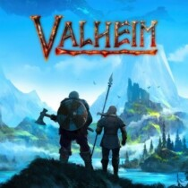

God of War is an action-filled advendure game with an excellent story and satisfying combat.
Read more here God of War 2018.

Valheim is a viking survival game with great combat, crafting mechanics and an immersive world to explore.
Read more here Valheim.
The Witcher 3 is based on the works of Polish writer Andrzej Sapkowski. It follows the story of Geralt of Rivia, a monster hunter or "witcher". The game has a beautiful art style, great combat and an immersive story.
Read more here The Witcher 3: Wild Hunt.